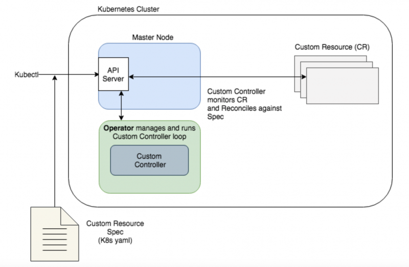

Configuration templating vs configuration as code, 12th round
Welcome
Agenda
| Introduction |
| IaC and Cloud |
| IaC and k8s |
| PaaS? |
| Config vs Code |
| Closure |

- Principal SRE Engineer @ Fastly
- Previously part time (Devops) lecturer @ La Salle University, Devops @ Schibsted (now Adevinta - behind Shpock and Willhaben), NTT, Oracle…
- Eventual OSS contributions (see tcpgoon)

IaC is not a new concept
We previously called that infra automation/orchestration
IaC as a huge umbrella
… and its limits are not so clear

Plus there are still news in this area
The expanding shock waves of supernovae can trigger the formation of new stars
And its here to stay, as…
Apps require a specific infrastructure/platform configuration
Infrastructure configuration is not a one-off
Composition of cloud services may be challenging
Advantages of “as code” approaches are now well known
Session objectives
Last year talk:
Configuration management (Puppet, Chef, Ansible…)
Immutable infrastructure with packer and terraform
Apply what is applicable
Terraform may not be the end of the journey

RCW 86 - Oldest recorded supernova
Configuration vs code… lets start!
IaC and Cloud
IaC and Cloud
| RAW IaC and SDKs |
| Playing with stacks |
| Stacks management with code |
| Multi-Cloud |
RAW IaC and SDKs
CLIs and scripting
#!/bin/bash
aws elb create-load-balancer --load-balancer-name MyLoadBalancer \
--listeners "Protocol=HTTP,LoadBalancerPort=80,InstanceProtocol=HTTP,InstancePort=80" \
--availability-zones us-east-1a
for i in `seq 1 2`; do
EC2_RUN_RESULT=$(ec2-run-instances --instance-type t2.micro --group default --region us-east-1 --key $EC2_INSTANCE_KEY --user-data-file instance_installs.sh ami-5244a300)
INSTANCE_NAME=$(echo ${EC2_RUN_RESULT} | sed 's/RESERVATION.*INSTANCE //' | sed 's/ .*//')$i
times=0
echo
while [ 5 -gt $times ] && ! ec2-describe-instances $INSTANCE_NAME | grep -q "running"
do
times=$(( $times + 1 ))
echo Attempt $times at verifying $INSTANCE_NAME is running...
done
if [ 5 -eq $times ]; then
echo Instance $INSTANCE_NAME is not running. Exiting...
exit
fi
aws elb register-instances-with-load-balancer --load-balancer-name MyLoadBalancer --instances $INSTANCE_NAME
done
API calls
import boto3
s3 = boto3.client('s3')
bucket_name = 'my-bucket'
s3.create_bucket(bucket_name)
filename = 'file.txt'
s3.upload_file(filename, bucket_name, filename)
Playing with stacks
Cloudformation
{
"AWSTemplateFormatVersion": "2010-09-09",
"Resources": {
"S3Bucket": {
"Type": "AWS::S3::Bucket"
},
},
"Outputs": {
"S3BucketSecureURL": {
"Value": {
"Fn::Join": [
"",
[
"https://",
{
"Fn::GetAtt": [
"S3Bucket",
"DomainName"
]
}
]
]
},
"Description": "Name of S3 bucket"
}
}
}
Google deployment manager
resources:
- type: storage.v1.bucket
name: test-bucket
properties:
project: my-project
name: test-bucket-name
Stacks management with code
Note: it is code, but it is not imperative
Troposphere
from troposphere
import Output, Ref, Template
from troposphere.s3
import Bucket, PublicRead
t = Template()
t.add_description(
"AWS CloudFormation Sample Template”
s3bucket = t.add_resource(Bucket("S3Bucket", AccessControl = PublicRead, ))
t.add_output(Output(
"BucketName",
Value = Ref(s3bucket),
Description = "Name of S3 bucket to hold website content"
))
print(t.to_json())
AWS CDK
Amazon Cloud Development Kit
from aws_cdk import (
aws_s3 as s3,
cdk
)
bucket = s3.Bucket(self,
"MyFirstBucket",
versioned=True,
encryption=s3.BucketEncryption.KmsManaged,)
troposphere, but multi-language plus “building blocks”
Multi-Cloud
Terraform
provider "aws" {
region = "us-west-2"
}
resource "aws_s3_bucket" "example" {
bucket = "my-test-s3-terraform-bucket"
acl = "private"
versioning {
enabled = true
}
tags {
Name = "my-test-s3-terraform-bucket"
}
}
Terrascript
import terrascript
import terrascript.provider as provider
import terrascript.resource as resource
config = terrascript.Terrascript()
config += provider.aws(version='~> 2.0', region='us-east-1')
config += resource.aws_vpc('example', cidr_block='10.0.0.0/16')
with open('config.tf.json', 'wt') as fp:
fp.write(str(config))
Pulumi
package main
import (
"github.com/pulumi/pulumi-gcp/sdk/go/gcp/storage"
"github.com/pulumi/pulumi/sdk/go/pulumi"
)
func main() {
pulumi.Run(func(ctx *pulumi.Context) error {
// NewBucket already adds a random suffix
bucket, err := storage.NewBucket(ctx, "pulumi-bucket", &storage.BucketArgs{
Location: "EU",
})
if err != nil {
return err
}
ctx.Export("bucketName", bucket.ID())
ctx.Export("websiteUrl", bucket.Url())
return nil
})
}
IaC and k8s
IaC and k8s
| k8s |
| k8s, Cloud providers and operators |
| But… where is the code? |
k8s
Objects, objects and objects…

Describing objects with YAML
apiVersion: apps/v1
kind: Deployment
metadata:
name: nginx-deployment
labels:
app: nginx
spec:
replicas: 3
selector:
matchLabels:
app: nginx
template:
metadata:
labels:
app: nginx
spec:
containers:
- name: nginx
image: nginx:1.7.9
ports:
- containerPort: 80
Helm
apiVersion: v1
kind: Pod
metadata:
name: {{ template "alpine.fullname" . }}
labels:
app.kubernetes.io/managed-by: {{ .Release.Service }}
app.kubernetes.io/instance: {{ .Release.Name | quote }}
app.kubernetes.io/version: {{ .Chart.AppVersion | quote }}
helm.sh/chart: {{ .Chart.Name }}-{{ .Chart.Version }}
app.kubernetes.io/name: {{ template "alpine.name" . }}
spec:
restartPolicy: {{ .Values.restartPolicy }}
containers:
- name: waiter
image: "{{ .Values.image.repository }}:{{ .Values.image.tag }}"
imagePullPolicy: {{ .Values.image.pullPolicy }}
command: ["/bin/sleep", "9000"]
kustomize
kustomization.yaml:
commonLabels:
env: production
bases:
- ../../base
patches:
- replica_count.yaml
replica_count.yaml:
apiVersion: apps/v1
kind: Deployment
metadata:
name: the-deployment
spec:
replicas: 100
K8s, Cloud providers and operators

Use case: k8s management with GitOps

Use case: managing external resources
apiVersion: service-operator.aws/v1alpha1
kind: DynamoDB
metadata:
name: dynamo-table
spec:
hashAttribute:
name: name
type: S
rangeAttribute:
name: created_at
type: S
readCapacityUnits: 5
writeCapacityUnits: 5

But… where is the code?
Pulumi and k8s
labels = { 'app': 'canary-{0}-{1}'.format(get_project(), get_stack()) }
canary = Deployment('canary',
spec={
'selector': { 'matchLabels': labels },
'replicas': 1,
'template': {
'metadata': { 'labels': labels },
'spec': { 'containers': [{ 'name': 'nginx', 'image': 'nginx' }] },
},
}, __opts__=ResourceOptions(provider=k8s_provider)
)
ingress = Service('ingress',
spec={
'type': 'LoadBalancer',
'selector': labels,
'ports': [{'port': 80}],
}, __opts__=ResourceOptions(provider=k8s_provider)
)
And we can still consume SDKs/APIs!
Golang and the k8s API client:
deployment := &appsv1.Deployment{
ObjectMeta: metav1.ObjectMeta{
Name: "demo-deployment",
},
Spec: appsv1.DeploymentSpec{
Replicas: int32Ptr(2),
Template: apiv1.PodTemplateSpec{
Spec: apiv1.PodSpec{
Containers: []apiv1.Container{
{
Name: "web",
Image: "nginx:1.12",
Ports: []apiv1.ContainerPort{
{
Name: "http",
Protocol: apiv1.ProtocolTCP,
ContainerPort: 80,
},
},
},
},
},
},
},
}
And we are also able to generate config programmatically…
package main
import (
"fmt"
"log"
"gopkg.in/yaml.v2"
)
func main() {
bucketsMap := map[string]map[string]interface{}{
"bucketGroup": map[string]interface{}{
"bucket1": "test1",
"bucket2": "test2",
},
}
bytes, err := yaml.Marshal(bucketsMap)
if err != nil {
log.Fatal(err)
}
fmt.Printf("%s", bytes)
}
$ go run test.go
bucketGroup:
bucket1: test1
bucket2: test2
PaaS?
They normally come with build/deployment tools describing and pushing infrastructure changes
# serverless.yml
service: usersCrud
provider: aws
functions:
resources: # CloudFormation template syntax
Resources:
usersTable:
Type: AWS::DynamoDB::Table
Properties:
TableName: usersTable
AttributeDefinitions:
- AttributeName: email
AttributeType: S
KeySchema:
- AttributeName: email
KeyType: HASH
ProvisionedThroughput:
ReadCapacityUnits: 1
WriteCapacityUnits: 1
Config vs Code
How IaC looks like with…
Terraform vs Pulumi

Bucket creation example
resource "google_storage_bucket" "terraform-bucket" {
name = "terraform-bucket-${random_id.suffix.dec}"
location = "EU"
website {
main_page_suffix = "index.html"
not_found_page = "404.html"
}
}
bucket, err := storage.NewBucket(ctx, "pulumi-bucket", &storage.BucketArgs{
Location: "EU",
Websites: []map[string]string{
map[string]string{
"main_page_suffix": "index.html",
"not_found_page": "404.html",
},
},
})
TF & provider specific config…
resource "google_container_cluster" "stackstorm-cluster" {
name = "stackstorm-${var.environment}"
zone = "us-central1-a"
min_master_version = "${data.google_container_engine_versions.central1a.latest_node_version}"
node_version = "${data.google_container_engine_versions.central1a.latest_node_version}"
lifecycle {
ignore_changes = ["node_pool"]
}
node_pool {
name = "default-pool"
}
additional_zones = [
"us-central1-b",
"us-central1-c",
"us-central1-f",
]
}
Pulumi: Code can use helpers!
func getClusterCfg(baseZone string) (*container.ClusterArgs, error) {
allZonesInSameRegion, err := getAllZonesInSameRegionThan(baseZone)
if err != nil {
return nil, err
}
return &container.ClusterArgs{
AdditionalZones: removeZone(allZonesInSameRegion, baseZone),
InitialNodeCount: initialNodeCountPerZone,
RemoveDefaultNodePool: true,
}, nil
}
TF: Control statements
resource "aws_autoscaling_group" "example" {
launch_configuration = aws_launch_configuration.example.id
availability_zones = data.aws_availability_zones.all.names
min_size = 2
max_size = 2
# Use for_each to loop over var.custom_tags
dynamic "tag" {
for_each = var.custom_tags
content {
key = tag.key
value = tag.value
propagate_at_launch = true
}
}
}
resource "aws_launch_configuration" "example" {
image_id = "ami-07ebfd5b3428b6f4d"
instance_type = "t2.nano"
lifecycle {
create_before_destroy = true
}
}
While, with Pulumi…

Control statements like a sir
pulumi.Run(func(ctx *pulumi.Context) error {
zones, err := getAllZonesInSameRegionThan("us-central1")
if err != nil {
return err
}
for i, zone := range zones {
if zone == "us-central1-f" {
continue
}
if _, err := compute.NewInstance(ctx, "pulumi-demo-instance-"+zone, getMyInstanceArgs(zone));
err != nil {
return err
}
if _, err = serviceAccount.NewAccount(ctx, "pulumiinstance-sc-"+zone, getMySCArgs(i));
err != nil {
return err
}
}
return nil
})
Encapsulation using Pulumi
class RedirectLB:
def __init__(self, dest_host, dest_path, resource_prefix="redirectLb"):
self.resource_prefix = resource_prefix
self.dest_host = dest_host
self.dest_path = dest_path
def provision(self):
self.ip_address = compute.GlobalAddress(
resource_name="{}-ip".format(self.resource_prefix)
)
url_map = compute.URLMap(
resource_name=self.resource_prefix,
default_url_redirect=compute.URLMapDefaultUrlRedirectArgs(
host_redirect=self.dest_host,
https_redirect=True,
path_redirect=self.dest_path,
redirect_response_code="MOVED_PERMANENTLY_DEFAULT",
strip_query=True,
),
)
http_target = compute.TargetHttpProxy(
resource_name="{}-http".format(self.resource_prefix), url_map=url_map
)
compute.GlobalForwardingRule(
resource_name="{}-http".format(self.resource_prefix),
target=http_target.self_link,
port_range="80-80",
ip_address=self.ip_address.address,
)
def outputs(self):
pulumi.export("LB IP address", self.ip_address.address)
And, fresh news!
pulumi automation-api lets you push stack changes also from code:
func NewAddCmd() *cobra.Command {
return &cobra.Command{
Use: "add",
Short: "add deploys an additional vm stack",
Run: func(cmd *cobra.Command, args []string) {
stackName := fmt.Sprintf("vmgr%d", rangeIn(10000000, 99999999))
s, err := auto.NewStackInlineSource(ctx, stackName, projectName, nil /* Program */)
fmt.Println("ensuring network is configured...")
subnetID, rgName, err := EnsureNetwork(ctx, projectName)
stack.SetProgram(GetDeployVMFunc(subnetID, rgName))
fmt.Println("deploying vm...")
stdoutStreamer := optup.ProgressStreams(os.Stdout)
res, err := s.Up(ctx, stdoutStreamer)
if err != nil {
fmt.Printf("Failed to deploy vm stack: %v\n", err)
os.Exit(1)
}
fmt.Printf("deployed server running at public IP %s\n", res.Outputs["ip"].Value)
},
}
}
}
Some advantages of using Code!
- Abstraction, re-usability and extensibility via standard programming languages capabilities
- Inheritance-mixins, interfaces, closures…
- Modules, packages, dep management…
- Testing
- Capacity to create complex workflows, including config pre-checks
- Applying clean code practices
- Easier to engage developers?
So…
why reinventing software-mgmt patterns on top of configuration languages?
Closure
Final remarks
IaC plays an important role in Devops and cloud apps
PaaS and k8s still require IaC
There are plenty of IaC options
Actual code avoids reinventing the wheel
Attributions
- Crab nebula in Multiple Wavelenghts:
By Based on File:Crab Nebula in multiwavelength.png by Torres997
Radio: NRAO/AUI and M. Bietenholz; NRAO/AUI and J.M. Uson, T.J. Cornwell
Infrared: NASA/JPL-Caltech/R. Gehrz (University of Minnesota)Visible: NASA, ESA, J. Hester and A. Loll (Arizona State University)
Ultraviolet: NASA/Swift/E. Hoversten,
PSUX-ray: NASA/CXC/SAO/F.Seward et al.
Gamma: NASA/DOE/Fermi LAT/R. Buehler
RCW 86:
- X-ray: NASA/CXC/SAO & ESA
- Infared: NASA/JPL-Caltech/B. Williams (NCSU)
yaml logo: IYIKON from the Noun Project
code logo: Andrejs Kirma from the Noun Project